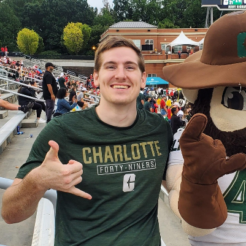

Home
I understand that what I put here is publicly available on the web and I won’t put anything here I don't want the public to see - Hunter L. Gayhart - 1/9/23

Norm and I at the game
• Personal Background: I’m from a small military town on the coast. Fitness enthusiast, come check out the UNCC MMA Club!
• Professional Background: After I got my associates, I started as a break / fix technician for two years before I decided to further my education.
• Academic Background: I went to community college in Jacksonville, NC prior to becoming a 49er.
• Background in this Subject: I’ve dabbled around with html and CSS in the past, but it was really just for fun.
• Primary Computer Platform: Windows, but I'm begrudgingly learning Linux.
• Courses I'm Taking & Why:
ITCS4180 - Technical elective requirement, I also have an interest in mobile app development.
ITIS3135 - Technical elective requirement, I also have an interest in web development.
ITIS3200 - Technical elective requirement, I also wish to work in cybersecurity at some point.
ITIS3310 - Technical elective requirement, I also wish to learn the lifecycle of applications.
ITIS4390 - Technical elective requirement, I feel like this class could help me learn software development.
CLT | GitHub | GitHub.IO | Course.IO | freecodecamp | Codecademy | LinkedIn
Thanks for visiting!